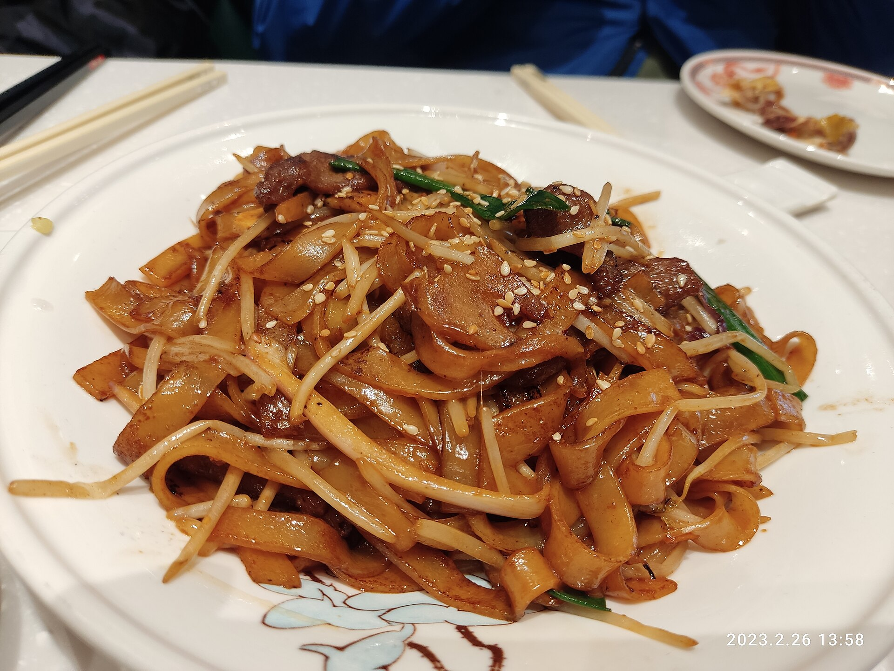

Home
Beef Chow Fun

Description
A beloved Cantonese classic — silky wide rice noodles stir-fried
with tender beef, crunchy bean sprouts, and green onions in a
savory sauce. The secret is wok hei: high heat and confidence.
Ingredients
- 8.9 ounces flank steak, thinly sliced against the grain
- 14.3 ounces fresh wide rice noodles (ho fun)
- 5.4 ounces bean sprouts
- 3 pieces green onions, cut into 2-inch pieces
- 0.5 pieces yellow onion, thinly sliced
- 3 tablespoons neutral oil (vegetable or peanut)
- 1 tablespoons soy sauce (for marinade)
- 1 teaspoons oyster sauce (for marinade)
- 0.3 teaspoons baking soda
- 1 teaspoons cornstarch
- 1 teaspoons sesame oil (for marinade)
- 1 tablespoons dark soy sauce
- 1.5 tablespoons light soy sauce
- 1 tablespoons oyster sauce (for sauce)
- 0.5 teaspoons sugar
- 0.3 teaspoons white pepper
Steps
-
Marinate the beef: Combine 8.9 ounces flank steak, thinly
sliced against the grain with 1 tablespoons soy sauce
(for marinade), 1 teaspoons oyster sauce (for marinade),
0.3 teaspoons baking soda, 1 teaspoons cornstarch, and 1
teaspoons sesame oil (for marinade). Mix well until the
beef absorbs the marinade. Let rest for at least 20 minutes.
-
Mix the sauce: In a small bowl, stir together 1 tablespoons
dark soy sauce, 1.5 tablespoons light soy sauce, 1 tablespoons
oyster sauce (for sauce), 0.5 teaspoons sugar, and 0.3
teaspoons white pepper. Set aside.
-
Separate the noodles: Gently pull apart the 14.3 ounces fresh
wide rice noodles (ho fun) by hand into individual strands. If
they're cold and stiff, microwave for 30 - 45 seconds to loosen
them. This prevents clumping in the wok.
-
Sear the beef: Heat a wok over the highest heat possible until smoking. Add 3 tablespoons neutral oil (vegetable or peanut) and sear the marinated beef in a single layer for 1 - 1m 30s without stirring, then toss briefly. Remove the beef before it's fully cooked and set aside.
-
Stir-fry the onion: In the same wok over high heat, add a touch more oil if needed. Stir-fry the 0.5 pieces yellow onion, thinly sliced for about 1 minute until softened and slightly charred at the edges.
-
Fry the noodles: Add the separated noodles to the wok. Pour the sauce over and toss everything with tongs or chopsticks. Let the noodles sit undisturbed for 2m 30s at a time to develop slight charring, then toss. Repeat for 2 - 3 minutes total.
-
Bring it all together: Return the seared beef to the wok. Add 5.4 ounces bean sprouts and 3 pieces green onions, cut into 2-inch pieces. Toss everything together over high heat for 1 final minute until the sprouts are just wilted but still have crunch. Taste and adjust seasoning.
-
Serve immediately: Plate straight from the wok and serve at once — chow fun waits for no one.